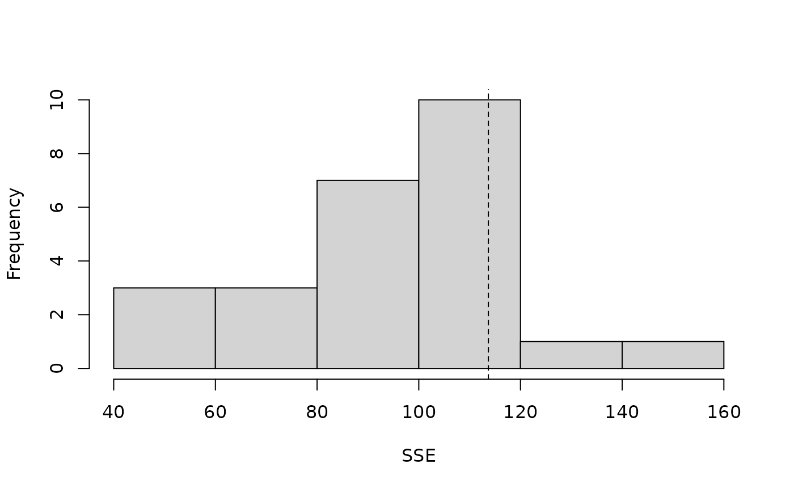
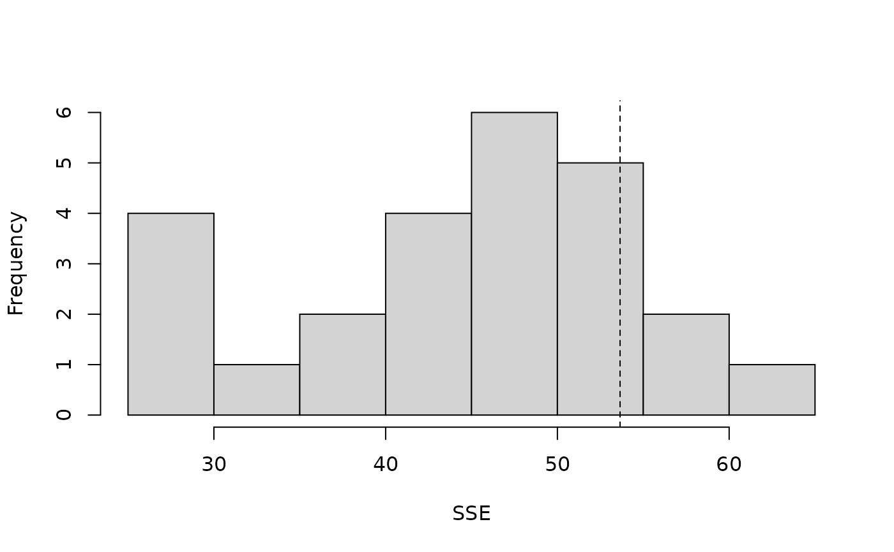
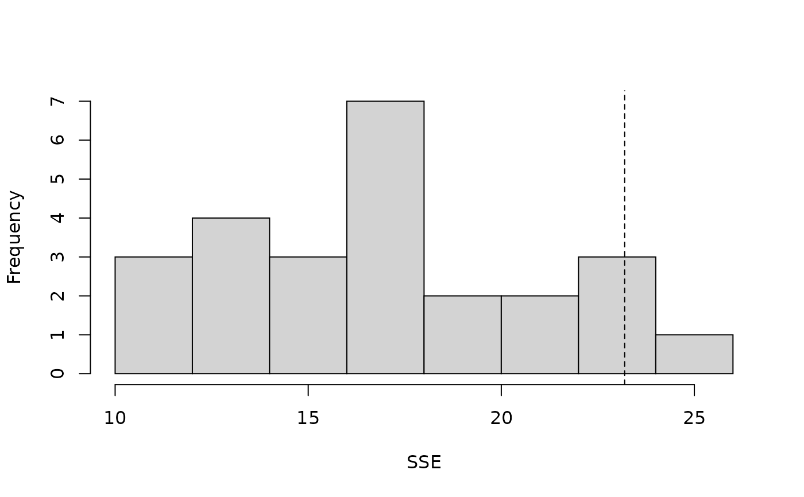

parboot.RdSimulate datasets from a fitted model, refit the model, and generate a sampling distribution for a user-specified fit-statistic.
| object | a fitted model inheriting class "unmarkedFit" |
|---|---|
| statistic | a function returning a vector of fit-statistics. First argument must be the fitted model. Default is sum of squared residuals. |
| nsim | number of bootstrap replicates |
| report | print fit statistic every 'report' iterations during resampling |
| seed | set seed for reproducible bootstrap |
| parallel | logical (default = |
| ncores | integer (default = one less than number of available cores) number of cores to use when bootstrapping in parallel. |
| ... | Additional arguments to be passed to statistic |
This function simulates datasets based upon a fitted model, refits the model, and evaluates a user-specified fit-statistic for each simulation. Comparing this sampling distribution to the observed statistic provides a means of evaluating goodness-of-fit or assessing uncertainty in a quantity of interest.
An object of class parboot with three slots:
parboot call
Numeric vector of statistics for original fitted model.
nsim by length(t0) matrix of statistics for each simulation fit.
Richard Chandler rbchan@uga.edu and Adam Smith
#> [1] 0 5 10 15 20lengths <- linetran$Length ltUMF <- with(linetran, { unmarkedFrameDS(y = cbind(dc1, dc2, dc3, dc4), siteCovs = data.frame(Length, area, habitat), dist.breaks = dbreaksLine, tlength = lengths*1000, survey = "line", unitsIn = "m") }) # Fit a model (fm <- distsamp(~area ~habitat, ltUMF))#> #> Call: #> distsamp(formula = ~area ~ habitat, data = ltUMF) #> #> Density: #> Estimate SE z P(>|z|) #> (Intercept) -0.287 0.167 -1.72 0.0852 #> habitatB 0.253 0.198 1.28 0.2000 #> #> Detection: #> Estimate SE z P(>|z|) #> (Intercept) 3.06 0.548 5.57 2.53e-08 #> area -0.13 0.096 -1.35 1.76e-01 #> #> AIC: 165.5482# Function returning three fit-statistics. fitstats <- function(fm) { observed <- getY(fm@data) expected <- fitted(fm) resids <- residuals(fm) sse <- sum(resids^2) chisq <- sum((observed - expected)^2 / expected) freeTuke <- sum((sqrt(observed) - sqrt(expected))^2) out <- c(SSE=sse, Chisq=chisq, freemanTukey=freeTuke) return(out) } (pb <- parboot(fm, fitstats, nsim=25, report=1))#> t0 = 113.6884 53.6492 23.19506 #> iter 1 : 51.76656 29.33734 12.13766 #> iter 2 : 86.40796 47.36944 20.79663 #> iter 3 : 101.0376 43.93918 17.6049 #> iter 4 : 119.055 46.61317 18.78843 #> iter 5 : 95.61046 46.82708 16.04149 #> iter 6 : 117.9119 52.39022 17.77974 #> iter 7 : 97.09245 48.89117 23.22477 #> iter 8 : 132.7958 52.14974 17.68474 #> iter 9 : 107.5958 46.70377 17.23415 #> iter 10 : 73.06662 29.29117 11.18831 #> iter 11 : 75.30468 37.47914 14.67528 #> iter 12 : 115.3185 50.47065 22.94304 #> iter 13 : 81.07769 40.60462 15.79172 #> iter 14 : 112.6747 38.32514 13.14837 #> iter 15 : 67.64564 45.55177 13.71304 #> iter 16 : 42.77671 29.09115 13.11265 #> iter 17 : 80.65436 33.16117 11.87273 #> iter 18 : 154.4764 60.23054 25.19856 #> iter 19 : 104.4421 52.93641 23.86797 #> iter 20 : 58.27236 29.40857 11.41073 #> iter 21 : 100.7842 52.87954 18.40903 #> iter 22 : 81.58062 41.29601 15.80306 #> iter 23 : 118.4719 59.95035 21.71737 #> iter 24 : 80.72755 43.11816 17.27023 #> iter 25 : 104.6474 58.91896 17.89389#> #> Call: parboot(object = fm, statistic = fitstats, nsim = 25, report = 1) #> #> Parametric Bootstrap Statistics: #> t0 mean(t0 - t_B) StdDev(t0 - t_B) Pr(t_B > t0) #> SSE 113.7 19.24 25.96 0.231 #> Chisq 53.6 8.97 9.58 0.115 #> freemanTukey 23.2 6.02 4.07 0.115 #> #> t_B quantiles: #> 0% 2.5% 25% 50% 75% 97.5% 100% #> SSE 43 48 81 97 113 141 154 #> Chisq 29 29 38 47 52 60 60 #> freemanTukey 11 11 14 17 19 24 25 #> #> t0 = Original statistic computed from data #> t_B = Vector of bootstrap samples #># Finite-sample inference for a derived parameter. # Population size in sampled area Nhat <- function(fm) { sum(bup(ranef(fm, K=50))) } set.seed(345) (pb.N <- parboot(fm, Nhat, nsim=25, report=5))#> t0 = 162.2135 #> iter 5 : 151.6393 #> iter 10 : 183.7412 #> iter 15 : 156.2485 #> iter 20 : 179.1255 #> iter 25 : 135.8852#> #> Call: parboot(object = fm, statistic = Nhat, nsim = 25, report = 5) #> #> Parametric Bootstrap Statistics: #> t0 mean(t0 - t_B) StdDev(t0 - t_B) Pr(t_B > t0) #> 1 162 0.701 15.9 0.462 #> #> t_B quantiles: #> 0% 2.5% 25% 50% 75% 97.5% 100% #> t*1 129 132 151 162 174 184 184 #> #> t0 = Original statistic computed from data #> t_B = Vector of bootstrap samples #>#> 2.5% 97.5% #> 117 218